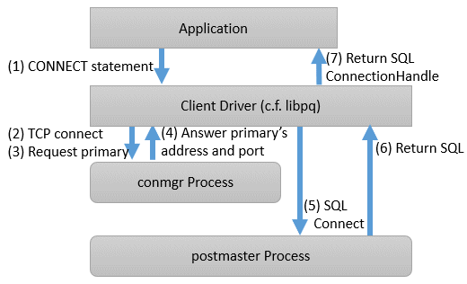

A connection using this mechanism actually consists of two steps, but from the perspective of the application, it looks like a single SQL connection. In the application's connection string, specify the IP address or host name (In most cases it is "localhost") and port number where the conmgr process listens, and target_session_attrs parameter. You do not need to explicitly state that the connection is to the conmgr process. This is because the client driver can automatically determine whether the connection is to a instance or a conmgr process.
In the first phase of the connection, the client driver receives a connection request from the application and connects to the location specified in the connection string. Initially, it uses the protocol PostgreSQL requests, and if it learns in the middle that the connection is to a conmgr process, it asks the conmgr process for the IP address and port number that the instance with the attributes specified in the connection parameter target_session_attrs is listening for. If the destination is a backend process rather than a conmgr process, the connection process completes immediately and continues to send and receive data for normal SQL execution. The first stage of processing falls within the scope of timeout monitoring for SQL connection processing by each client driver. For example, the connection_timeout parameter of libpq.
In the second phase of the connection, the client driver connects to the instance using the IP address and port number from the conmgr process.Thereafter, the client driver and the instance directly send and receive the data for SQL execution. This ensures that the Connection Manager does not affect the performance of the SQL execution.
When the client driver is waiting to receive data after the second stage is completed, it monitors the reception of data to the two sockets obtained at each stage of the connection. This allows the client driver to know when, for example, the conmgr process notifies the client of a network link down.
